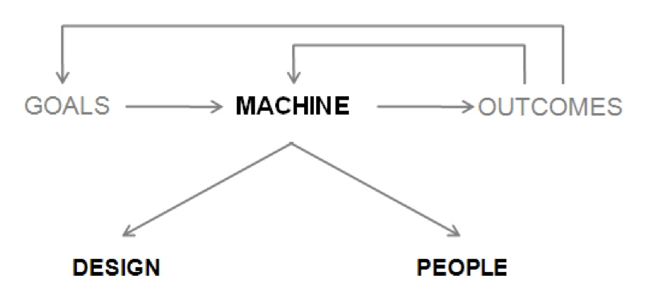

Book Summary - Principles by Ray Dalio
Core Beliefs and Concepts
Principles: Laws of nature and mechanisms that govern reality. Align with them and prosper. Go against them and be ruined.
Evolution: One of the greatest forces in the universe. A natural movement towards adaptation. This applies to human systems, including morality.
Evolution as a goal: The desire to evolve is humanity’s most pervasive driving force. Focus on your personal evolutionary process.
Hyper-realism: Map versus territory. Strive for truth, accept it, then act. Don’t hope for a better reality. Accurate understanding of reality is the essential foundation for good outcomes. This demands brutal honesty.
Independent thinking: Consensus is often wrong. Bad opinions can be costly. Think for yourself and stress-test your ideas with people smarter than you.
Failure as feedback: Failure is a feedback loop for learning and a guiding light to good outcomes. The faster you learn, the faster you reach your goals.
His Model for Decision Making

Goals - your goals
Outcomes - intended results
Machine - the process of achieving your gals. Basically 2 big things
Design - good system that iteratively get you closer to your goals. (gradient descent)
People - human elements in your machine.
The Two Yous
Think of yourself as two people:
The master planner: Monitors and tweaks your machine. An ideal rationalist. Free of emotion.
The executor: Treat yourself as another person in your machine. Look at yourself from the top down.
Five-Step Process to Get What You Want
- Choose your goals - Have clear goals
- Design a plan - Create a system to reach those goals
- Encounter problems - Execute your plan and hit obstacles
- Diagnose the problems - Understand what went wrong
- Redesign the plan - Tweak your approach to get around the problems
Treat these as distinct steps. Don’t blur them together. Each step needs appropriate time and effort. The process is iterative, so follow them in order.